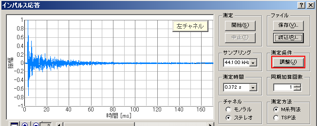
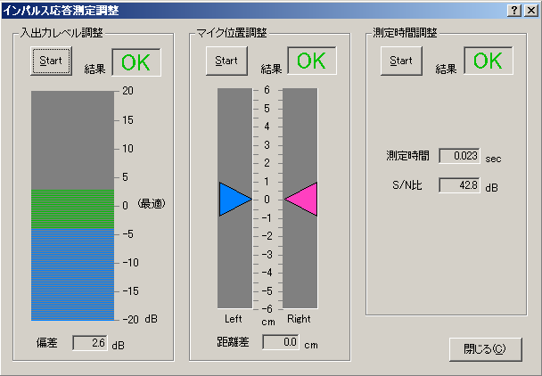

| 項目 | 説明 |
|---|---|
| 入出力レベル調整 | Startボタンをクリックすると信号音が出力され、入力信号の大きさが測定されます。入力レベルが低すぎるとS/N比が悪くなり、逆に高すぎると波形が歪んで正しい結果が得られなくなるため、測定は適正なレベルで行う必要があります。 入力レベルの大きさはバーの高さで表示され、バーの色が青い範囲ではレベルが低すぎ、緑の範囲なら適正、赤の範囲では高すぎます。レベルが適正でない場合は、メインウィンドウの[入力装置]の[音量]を自動的に調整します。[結果]に適正ならば「ＯＫ］、入力レベルが高すぎるか低すぎる場合は「ＮＧ］と表示されます。 |
| マイク位置調整 | Startボタンをクリックすると信号音が出力され、左右のマイクの音源からの距離の差が表示されますので、それが0になるようにマイクの位置を調整します。左右のマイクの音源からの距離差が2cm以内では[結果]に「ＯＫ」、2cmを超えていると「ＮＧ」と表示されます。 |
| 測定時間調整 | 音場の残響の大きさにより最適な測定時間に調整します。残響時間に比べて測定時間が短いと正確な測定が行われません。また長すぎると測定および計算に時間がかかるようになります。通常は、残響時間の２倍くらいの測定時間が適当です。 |